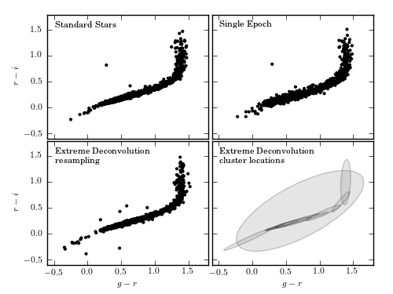
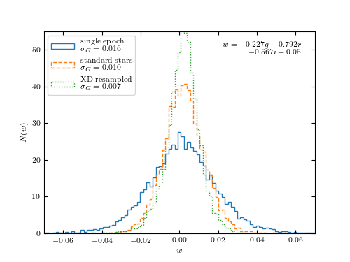

Extreme Deconvolution of Stellar Data¶
This figure demonstrates the use of Extreme Deconvolution on real stellar data. We compare the single-epoch photometry from SDSS to the multi-epoch photometry from stripe 82. The extreme deconvolution recovers the underlying non-noisy distribution.
 {kind=link}
{kind=link}
number of noisy points: (82003, 2)
number of stacked points: (13377, 2)
size after crossmatch: (12313, 5)
@pickle_results: using precomputed results from 'XD_stellar.pkl'
# Author: Jake VanderPlas <vanderplas@astro.washington.edu>
# License: BSD
# The figure produced by this code is published in the textbook
# "Statistics, Data Mining, and Machine Learning in Astronomy" (2013)
# For more information, see http://astroML.github.com
import numpy as np
from matplotlib import pyplot as plt
from astroML.density_estimation import XDGMM
from astroML.crossmatch import crossmatch
from astroML.datasets import fetch_sdss_S82standards, fetch_imaging_sample
from astroML.plotting.tools import draw_ellipse
from astroML.decorators import pickle_results
from astroML.stats import sigmaG
#------------------------------------------------------------
# define u-g-r-i-z extinction from Berry et al, arXiv 1111.4985
# multiply extinction by A_r
extinction_vector = np.array([1.810, 1.400, 1.0, 0.759, 0.561])
#----------------------------------------------------------------------
# Fetch and process the noisy imaging data
data_noisy = fetch_imaging_sample()
# select only stars
data_noisy = data_noisy[data_noisy['type'] == 6]
# Get the extinction-corrected magnitudes for each band
X = np.vstack([data_noisy[f + 'RawPSF'] for f in 'ugriz']).T
Xerr = np.vstack([data_noisy[f + 'psfErr'] for f in 'ugriz']).T
# extinction terms from Berry et al, arXiv 1111.4985
X -= (extinction_vector * data_noisy['rExtSFD'][:, None])
#----------------------------------------------------------------------
# Fetch and process the stacked imaging data
data_stacked = fetch_sdss_S82standards()
# cut to RA, DEC range of imaging sample
RA = data_stacked['RA']
DEC = data_stacked['DEC']
data_stacked = data_stacked[(RA > 0) & (RA < 10) &
(DEC > -1) & (DEC < 1)]
# get stacked magnitudes for each band
Y = np.vstack([data_stacked['mmu_' + f] for f in 'ugriz']).T
Yerr = np.vstack([data_stacked['msig_' + f] for f in 'ugriz']).T
# extinction terms from Berry et al, arXiv 1111.4985
Y -= (extinction_vector * data_stacked['A_r'][:, None])
# quality cuts
g = Y[:, 1]
mask = ((Yerr.max(1) < 0.05) &
(g < 20))
data_stacked = data_stacked[mask]
Y = Y[mask]
Yerr = Yerr[mask]
#----------------------------------------------------------------------
# cross-match
# the imaging sample contains both standard and variable stars. We'll
# perform a cross-match with the standard star catalog and choose objects
# which are common to both.
Xlocs = np.hstack((data_noisy['ra'][:, np.newaxis],
data_noisy['dec'][:, np.newaxis]))
Ylocs = np.hstack((data_stacked['RA'][:, np.newaxis],
data_stacked['DEC'][:, np.newaxis]))
print "number of noisy points: ", Xlocs.shape
print "number of stacked points:", Ylocs.shape
# find all points within 0.9 arcsec. This cutoff was selected
# by plotting a histogram of the log(distances).
dist, ind = crossmatch(Xlocs, Ylocs, max_distance=0.9 / 3600.)
noisy_mask = (~np.isinf(dist))
stacked_mask = ind[noisy_mask]
# select the data
data_noisy = data_noisy[noisy_mask]
X = X[noisy_mask]
Xerr = Xerr[noisy_mask]
data_stacked = data_stacked[stacked_mask]
Y = Y[stacked_mask]
Yerr = Yerr[stacked_mask]
# double-check that our cross-match succeeded
assert X.shape == Y.shape
print "size after crossmatch:", X.shape
#----------------------------------------------------------------------
# perform extreme deconvolution on the noisy sample
# first define mixing matrix W
W = np.array([[0, 1, 0, 0, 0], # g magnitude
[1, -1, 0, 0, 0], # u-g color
[0, 1, -1, 0, 0], # g-r color
[0, 0, 1, -1, 0], # r-i color
[0, 0, 0, 1, -1]]) # i-z color
X = np.dot(X, W.T)
Y = np.dot(Y, W.T)
# compute error covariance from mixing matrix
Xcov = np.zeros(Xerr.shape + Xerr.shape[-1:])
Xcov[:, range(Xerr.shape[1]), range(Xerr.shape[1])] = Xerr ** 2
# each covariance C = WCW^T
# best way to do this is with a tensor dot-product
Xcov = np.tensordot(np.dot(Xcov, W.T), W, (-2, -1))
#----------------------------------------------------------------------
# This is a long calculation: save results to file
@pickle_results("XD_stellar.pkl")
def compute_XD(n_clusters=12, rseed=0, n_iter=100, verbose=True):
np.random.seed(rseed)
clf = XDGMM(n_clusters, n_iter=n_iter, tol=1E-5, verbose=verbose)
clf.fit(X, Xcov)
return clf
clf = compute_XD(12)
#------------------------------------------------------------
# Fit and sample from the underlying distribution
np.random.seed(42)
X_sample = clf.sample(X.shape[0])
#------------------------------------------------------------
# plot the results
fig = plt.figure()
fig.subplots_adjust(left=0.1, right=0.95,
bottom=0.1, top=0.95,
wspace=0.02, hspace=0.02)
# only plot 1/10 of the stars for clarity
ax1 = fig.add_subplot(221)
ax1.scatter(Y[::10, 2], Y[::10, 3], s=9, lw=0, c='k')
ax2 = fig.add_subplot(222)
ax2.scatter(X[::10, 2], X[::10, 3], s=9, lw=0, c='k')
ax3 = fig.add_subplot(223)
ax3.scatter(X_sample[::10, 2], X_sample[::10, 3], s=9, lw=0, c='k')
ax4 = fig.add_subplot(224)
for i in range(clf.n_components):
draw_ellipse(clf.mu[i, 2:4], clf.V[i, 2:4, 2:4], scales=[2],
ec='k', fc='gray', alpha=0.2, ax=ax4)
titles = ["Standard Stars", "Single Epoch",
"Extreme Deconvolution\n resampling",
"Extreme Deconvolution\n cluster locations"]
ax = [ax1, ax2, ax3, ax4]
for i in range(4):
ax[i].set_xlim(-0.6, 1.8)
ax[i].set_ylim(-0.6, 1.8)
ax[i].xaxis.set_major_locator(plt.MultipleLocator(0.5))
ax[i].yaxis.set_major_locator(plt.MultipleLocator(0.5))
ax[i].text(0.05, 0.95, titles[i],
ha='left', va='top', transform=ax[i].transAxes)
if i in (0, 1):
ax[i].xaxis.set_major_formatter(plt.NullFormatter())
else:
ax[i].set_xlabel('$g-r$')
if i in (1, 3):
ax[i].yaxis.set_major_formatter(plt.NullFormatter())
else:
ax[i].set_ylabel('$r-i$')
#------------------------------------------------------------
# Second figure: the width of the locus
fig = plt.figure()
ax = fig.add_subplot(111)
labels = ['single epoch', 'standard stars', 'XD resampled']
linestyles = ['solid', 'dashed', 'dotted']
for data, label, ls in zip((X, Y, X_sample), labels, linestyles):
g = data[:, 0]
gr = data[:, 2]
ri = data[:, 3]
r = g - gr
i = r - ri
mask = (gr > 0.3) & (gr < 1.0)
g = g[mask]
r = r[mask]
i = i[mask]
w = -0.227 * g + 0.792 * r - 0.567 * i + 0.05
sigma = sigmaG(w)
ax.hist(w, bins=np.linspace(-0.08, 0.08, 100), linestyle=ls,
histtype='step', label=label + '\n\t' + r'$\sigma_G=%.3f$' % sigma,
normed=True)
ax.legend(loc=2)
ax.text(0.99, 0.99, '$w = -0.227g + 0.792r$\n$ - 0.567i + 0.05$',
transform=ax.transAxes, ha='right', va='top', size=14)
ax.set_xlim(-0.08, 0.08)
ax.set_ylim(0, 55)
ax.set_xlabel('$w$')
ax.set_ylabel('$N(w)$')
plt.show()